Bryson Henderson
Google Colab, CPU with 2 threads. Python 3.13.18, torch 2.14.1, numpy 2.4.6.
Model: MLP with input (x, y, t), three hidden layers of width 128 with SiLU, and a 2D velocity output (33,794 parameters). Training: Adam, learning rate 0.001, batch size 256. Seed 0 for training, seed 1 for the sampling plots and animation, and seed 123 for the step comparison.
Training time: ring, 20,000 steps in 108.7 s. Letter, 30,000 steps in 167.7 s. Both checkpoints were saved so the plots did not need retraining.
Source points come from a standard 2D Gaussian. The target is a ring: I pick a random angle and a radius of 2 plus Gaussian noise with standard deviation 0.1. All plots use the range -4 to 4.
For training, each noise point x0 is paired with a random ring point x1, t is drawn uniformly from 0 to 1, and the training input is x_t = (1 - t) x0 + t x1 with target velocity u = x1 - x0.
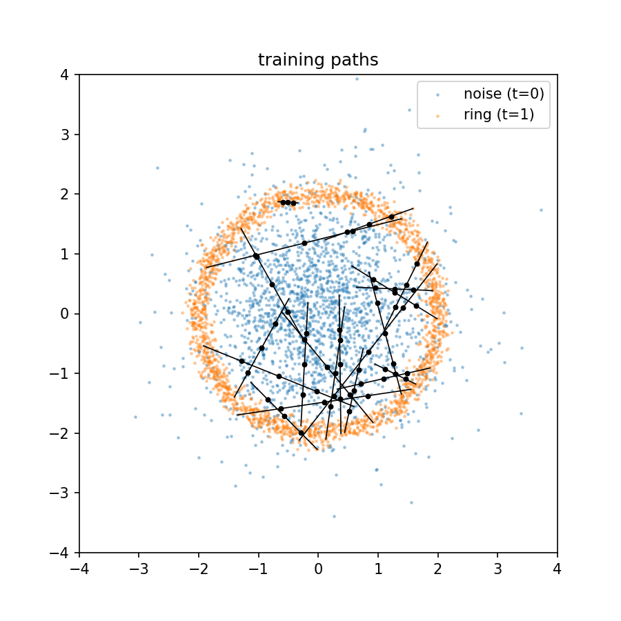
The velocity is constant along each training path because the derivative of x_t with respect to t is x1 - x0, which does not depend on t. Every point on one straight line has the same velocity.
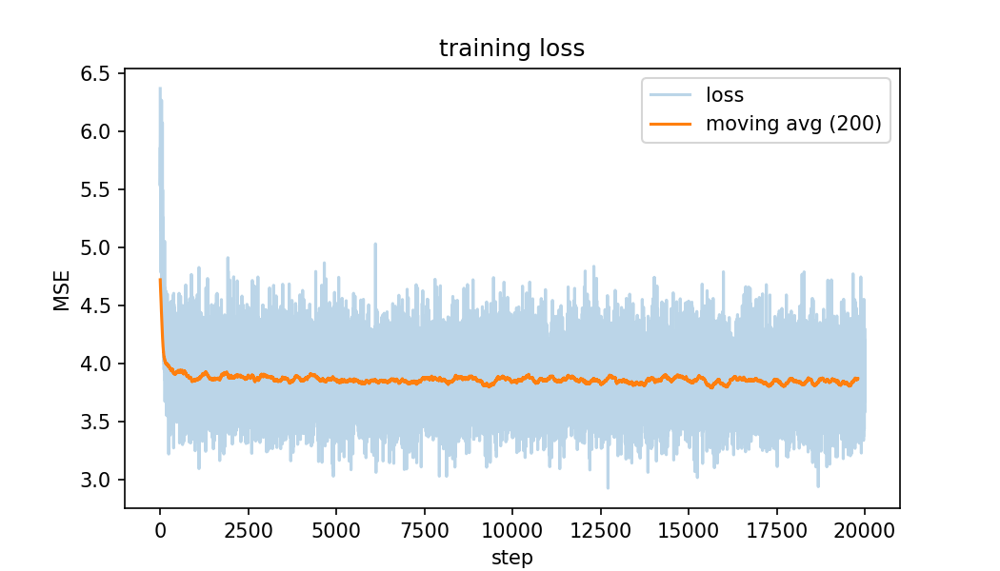
The network is given a point and a time and predicts the velocity that point should move with. The loss drops quickly and then levels off around 3.85, not zero. Since the pairs are random, the training lines cross, and the same point and time can show up with many different target velocities. The network cannot match all of them, so it learns their average. That average is the field used for generation, and the network never sees the endpoint x1 when generating.
I start from fresh Gaussian samples and use forward Euler, z = z + dt * v(z, t), with 100 steps.
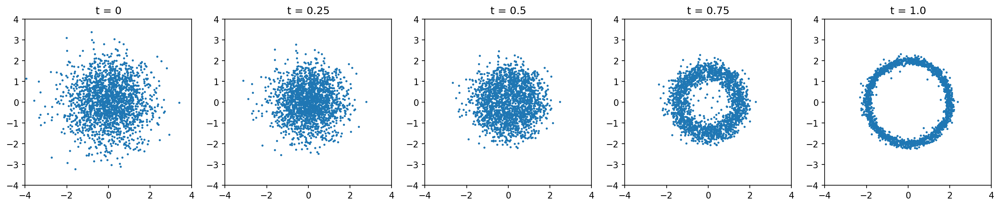
The cloud first shrinks toward the middle, then a hole opens and the points move out onto the ring.
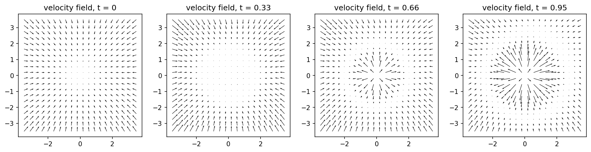
At t = 0 the arrows near the center are almost zero, because a point there could be paired with any part of the ring and the average cancels out. Points far outside get pulled inward. By t = 0.95 the arrows near the center point outward and push points onto the ring.
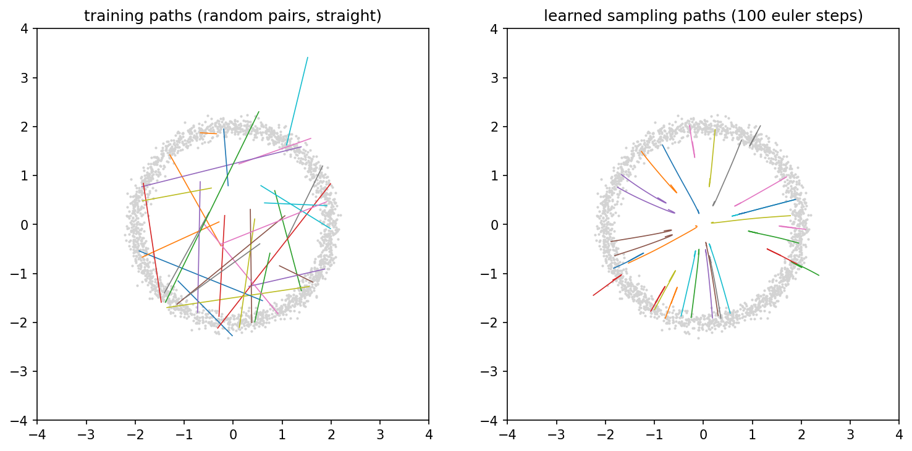
The training paths go from noise to a random ring point and cross each other all over. The learned sampling paths are different: they do not cross, they mostly point outward from the center, and each point goes to the nearby part of the ring instead of a random one. Some of them bend slightly, so straight training lines did not make the sampling paths perfectly straight.
My target is the letter B. I drew it in code with Pillow's built-in font on a 256 x 256 image, so there is no outside image and no permission issue. Every white pixel (8,313 of them) is part of the shape. To sample a point I pick a random white pixel, add a random offset inside that pixel, flip y, and scale it to about -3 to 3 so it matches the noise.
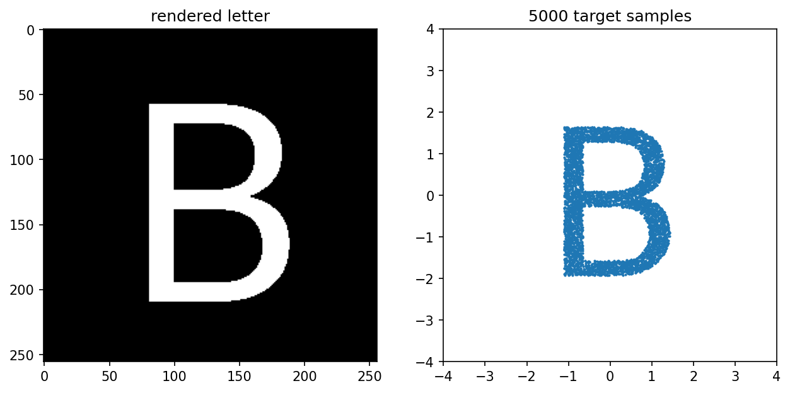
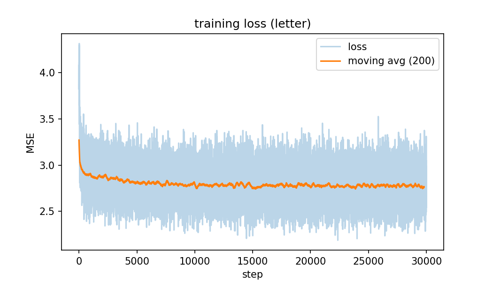
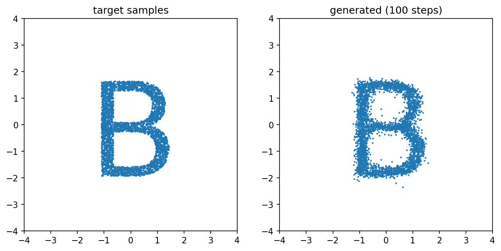
I used the same model and training as Part 1, but trained for 30,000 steps because the strokes are thinner than the ring. The generated B is clear, with slightly blurry edges and a few points in the holes.
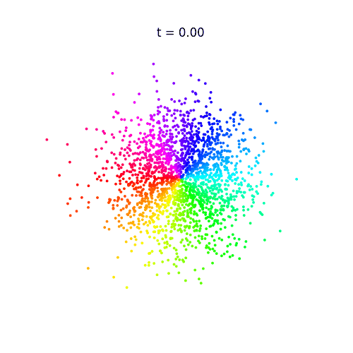
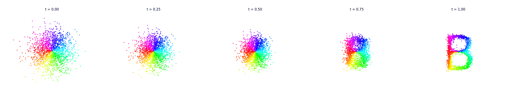
The same 2,000 particles are tracked through all 100 Euler steps. Each particle gets a color from the angle of its starting noise point, using a color wheel, and keeps that color the whole time. The colors are only for plotting and are not used in training. The model only predicts x and y velocity.
The colors show that nearby starting points end up near each other: purple and blue end up on top of the B, red on the left, green on the bottom, and cyan on the right.
I kept the trained weights and the same 10,000 starting points fixed and changed only the number of Euler steps. Each step is one network call. The time is sampling only (no plotting), taken as the median of 3 runs.
For quality, I put the generated points and 10,000 new target samples on the same 40 x 40 grid over -4 to 4, with one extra bin for points outside the grid, and computed the total variation distance between the two histograms (0 means the same, 1 means no overlap). Two independent sets of real target samples give 0.076, so that is the best possible score.
| Steps | Network calls | Time (ms) | Histogram TV | Outside grid |
|---|---|---|---|---|
| 1 | 1 | 44.2 | 0.973 | 0 |
| 5 | 5 | 103.1 | 0.328 | 0 |
| 10 | 10 | 207.5 | 0.204 | 0 |
| 25 | 25 | 540.9 | 0.155 | 0 |
| 50 | 50 | 1060.2 | 0.144 | 0 |
| 100 | 100 | 2189.9 | 0.141 | 0 |
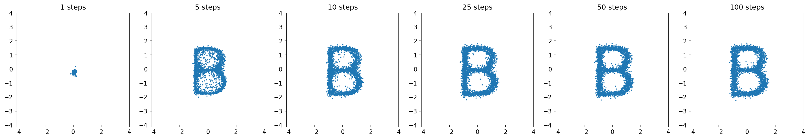
Every panel is the final result at t = 1. The step count only changes how finely the path from noise to the shape is divided.
With 1 step, every point lands in the same spot. At t = 0 a noise point could be paired with any point in the B, so the model predicts roughly "move to the average of the B," and one full step sends everything there. With 5 and 10 steps the B shows up but is blurry, with points in the holes. From 25 to 100 steps the score levels off around 0.14 to 0.16, while the cost keeps growing at about 20 ms per step.
The remaining gap from 0.141 down to 0.076 does not go away with more steps, so it comes from the learned model: blurry edges and points in the holes still show up at 100 steps. Part of it also comes from the target representation, since the shape is built from a 256 pixel image and the histogram bins are 0.2 wide. More steps reduce the Euler error, but they cannot fix the learned field itself. For this model, about 25 steps is a good trade-off.